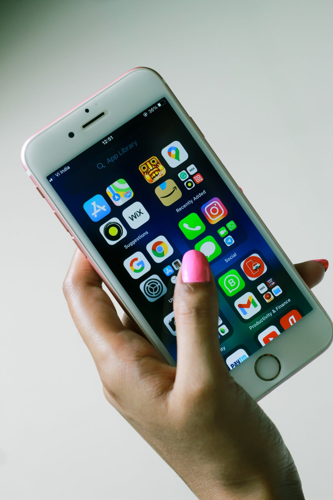
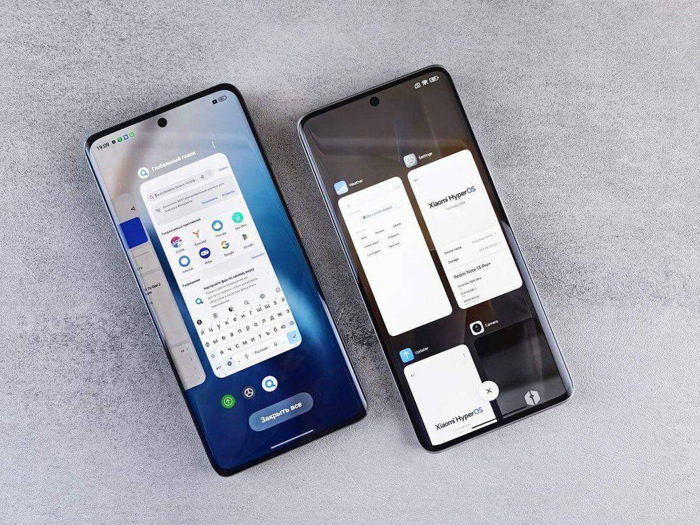

Backup WhatsApp dilakukan lewat menu Setelan, Chat, Cadangan Chat di HP Android dan iPhone. Di Android cadangannya tersimpan di Akun Google, di iPhone tersimpan di iCloud. Sekali diatur, kamu bisa memilih cadangan otomatis harian, mingguan, atau bulanan supaya chat tidak hilang saat HP rusak atau berganti HP. Semua langkahnya gratis dan memakai fitur bawaan WhatsApp, per November 2026.
Kenapa backup ini penting? WhatsApp menyimpan riwayat chat di HP kamu, bukan di server WhatsApp. Kalau HP hilang, rusak, atau kamu menghapus aplikasi tanpa cadangan, semua chat, foto, dan dokumen di dalamnya ikut hilang dan tidak bisa dipulihkan siapa pun, termasuk oleh WhatsApp sendiri. Cadangan memakai kuota cloud gratis yang terbatas, jadi cek ruang yang tersisa sebelum membuat cadangan. Ada juga pilihan cadangan terenkripsi end-to-end yang dikunci passkey, kata sandi, atau kunci 64 digit, karena cadangan biasa tidak dilindungi enkripsi end-to-end WhatsApp. Satu batas yang wajib diingat: cadangan tidak bisa pindah platform, jadi cadangan Google tidak bisa dipulihkan di iPhone dan sebaliknya.
Bagaimana cara backup WhatsApp di HP Android?
Di Android, WhatsApp menyimpan cadangan ke Akun Google yang kamu pilih. Sebelum mulai, pastikan akun Google aktif di HP, ada koneksi internet yang stabil, dan ruang kosong di akun Google cukup untuk ukuran cadangan. Langkahnya begini:
- Buka WhatsApp, ketuk ikon tiga titik di pojok kanan atas, lalu pilih Setelan.
- Masuk ke menu Chat, lalu pilih Cadangan chat.
- Pilih Akun Google yang akan menyimpan cadangan. Kalau belum ada akun yang terhubung, ketuk Akun Google dan masuk dulu.
- Atur frekuensi cadangan otomatis ke Harian supaya selalu ada salinan terbaru.
- Ketuk Cadangkan untuk membuat cadangan sekarang juga, lalu tunggu sampai selesai tanpa menutup aplikasi.
Secara bawaan, video tidak ikut dicadangkan. Kalau mau video ikut tersimpan, aktifkan Sertakan video di layar yang sama, tapi ingat ukuran cadangan jadi jauh lebih besar dan kuota 15 GB lebih cepat habis. Sesudah selesai, layar Cadangan chat menampilkan waktu cadangan terakhir. Cek tanggal itu sebelum reset HP atau pindah ke HP baru, karena WhatsApp hanya memulihkan cadangan terakhir itu.

Bagaimana cara backup WhatsApp di iPhone?
Di iPhone, cadangan WhatsApp tersimpan di iCloud. Pastikan kamu sudah masuk dengan Apple ID yang sama dengan yang dipakai di HP, iCloud Drive aktif, dan WhatsApp diizinkan memakai iCloud. Jalurnya: Pengaturan iPhone, nama kamu, iCloud, lalu pastikan iCloud Drive menyala. Langkahnya begini:
- Buka WhatsApp, ketuk Pengaturan di pojok kanan bawah.
- Pilih Chat, lalu ketuk Cadangan Chat.
- Ketuk Cadangkan Sekarang untuk membuat cadangan saat itu juga.
- Atur Cadangan Otomatis ke Harian, Mingguan, atau Bulanan sesuai kebutuhanmu.
Kuota gratis iCloud hanya 5 GB dan dipakai bersama foto serta cadangan perangkat iPhone, jadi cepat penuh. Kalau cadangan gagal karena ruang habis, hapus foto atau cadangan lama di iCloud dulu, atau matikan opsi Sertakan Video supaya ukuran cadangan mengecil. WhatsApp juga meminta ruang kosong di iCloud dan di HP minimal 2,05 kali ukuran cadangan, karena HP butuh ruang untuk menyusun cadangan sebelum mengunggahnya.

Apakah cadangan WhatsApp aman?
Secara bawaan, cadangan yang tersimpan di Google atau iCloud tidak dilindungi enkripsi end-to-end seperti chat WhatsApp itu sendiri. Artinya, siapa pun yang bisa masuk ke akun Google atau Apple ID kamu berpotensi memulihkan cadangan itu. WhatsApp menyediakan lapisan tambahan bernama cadangan terenkripsi end-to-end. Aktifkan lewat Setelan, Chat, Cadangan chat, Cadangan terenkripsi secara end-to-end, lalu pilih passkey, kata sandi buatanmu, atau kunci enkripsi 64 digit yang dibuatkan WhatsApp. Simpan kunci itu baik-baik, karena kalau hilang, tidak ada yang bisa membuka cadanganmu, termasuk WhatsApp, Google, dan Apple. Supaya akunmu makin aman, aktifkan verifikasi dua langkah WhatsApp juga, supaya orang lain tidak bisa membajak nomormu lalu memulihkan cadanganmu di HP lain.
Kenapa cadangan WhatsApp gagal atau tidak bisa dipulihkan?
Ada empat penyebab yang paling sering membuat cadangan gagal atau tidak bisa dipakai saat pindah HP. Kenali dulu sebelum kamu butuh cadangan itu.
- Kuota cloud penuh. Cadangan Android memotong kuota 15 GB akun Google, cadangan iPhone memotong kuota 5 GB iCloud. Kalau penuh, cadangan berhenti. Solusinya: hapus isi Google Drive atau foto lama, atau matikan Sertakan video. Menghemat kuota internet di HP Android juga membantu supaya proses cadangan tidak tersendat di tengah jalan.
- Akun berbeda. Pemulihan hanya jalan kalau HP baru masuk dengan akun Google atau Apple ID yang sama dengan saat cadangan dibuat, plus nomor telepon yang sama. Cek dulu akun mana yang tercantum di layar Cadangan chat sebelum pindah HP.
- Cadangan sudah terlalu lama. Cadangan Google yang tidak diperbarui selama lima bulan bisa dihapus otomatis oleh Google dan tidak bisa dikembalikan. Karena itu atur cadangan otomatis harian, bukan manual sesekali.
- Pindah platform. Cadangan Google tidak bisa dibaca iPhone dan cadangan iCloud tidak bisa dibaca Android. Untuk pindah Android ke iPhone atau sebaliknya, pakai fitur Transfer Chat resmi WhatsApp saat menyiapkan HP baru, dengan kedua HP berdekatan dan terhubung ke Wi-Fi yang sama.
Untuk memulihkan di HP baru yang platformnya sama, pasang WhatsApp, verifikasi nomor yang sama, lalu ketuk Pulihkan saat muncul tawaran dari Google Drive atau iCloud. Jangan lewati tawaran itu.

Backup WhatsApp cuma butuh beberapa menit sekali, lalu berjalan sendiri kalau cadangan otomatis sudah menyala. Luangkan waktu hari ini untuk mengecek tanggal cadangan terakhir di HP kamu. Kalau tanggalnya sudah lama atau belum pernah ada, buat cadangan sekarang selagi HP masih sehat. Chat yang hilang karena tidak ada cadangan tidak bisa kembali, tapi chat yang sudah dicadangkan bisa ikut pindah ke HP baru tanpa drama.
Baca juga: kalau mau akunmu makin aman, baca Cara Mengaktifkan Verifikasi Dua Langkah WhatsApp, Akun Aman dari Pembajakan. Supaya chatmu tidak diintip orang lain, baca Cara Mengunci Aplikasi di HP Android dan iPhone, Tanpa Aplikasi Tambahan. Kalau HP Androidmu terasa lambat saat membuka WhatsApp, baca Cara Mempercepat HP Android yang Lemot Tanpa Aplikasi Pembersih Tambahan. Daftar lengkap artikel Other ada di halaman Other, dan artikel riset lain ada di blog.
Sumber dan Info Resmi
Fakta dan angka di artikel ini merujuk ke sumber berikut:
- Telkomsel: Cara Backup WhatsApp agar Chat Tetap Aman: langkah backup Android (Setelan, Chat, Cadangan chat, Akun Google) dan iPhone (Pengaturan, Chat, Cadangan Chat, Cadangkan Sekarang), cadangan otomatis harian, mingguan, atau bulanan, Android memakai Akun Google dan iPhone memakai iCloud.
- Mayuh Macah: Cara Backup Chat WhatsApp Tanpa Kehilangan Data: cadangan Android kini memotong kuota gratis 15 GB akun Google, iCloud gratis 5 GB, cadangan tidak bisa pindah platform, restore butuh akun dan nomor yang sama.
- Nova Media Lab: Cara Backup WhatsApp dan WhatsApp Business (2026): jalur cadangan terenkripsi end-to-end (Setelan, Chat, Cadangan chat, Cadangan terenkripsi secara end-to-end) dengan passkey atau kunci enkripsi 64 digit, dan kunci itu satu-satunya cara membuka cadangan; video hanya ikut dicadangkan kalau Sertakan video diaktifkan.
- Kanal: WhatsApp Backup dan Restore: iPhone butuh ruang kosong di iCloud dan di HP minimal 2,05 kali ukuran cadangan, WhatsApp tidak menyimpan riwayat chat di servernya sehingga tidak bisa memulihkan chat tanpa cadangan, cadangan Google yang tidak diperbarui selama lima bulan bisa dihapus otomatis.
- Sinch: WhatsApp backup, How to back up and restore your messages: cadangan biasa tidak dilindungi enkripsi end-to-end, kunci enkripsi yang hilang tidak bisa direset siapa pun, pindah platform memakai fitur Transfer Chat resmi dengan kedua HP berdekatan dan Wi-Fi yang sama.
- Leveltekno: Cara Backup WhatsApp ke Google Drive dan iCloud: kuota gratis Google 15 GB dipakai bersama Gmail dan Google Foto, iCloud gratis 5 GB, syarat ruang kosong 2,05 kali ukuran cadangan di iPhone.